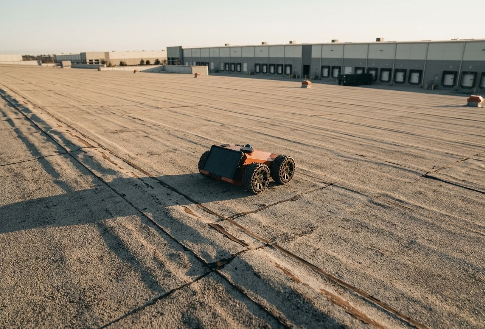
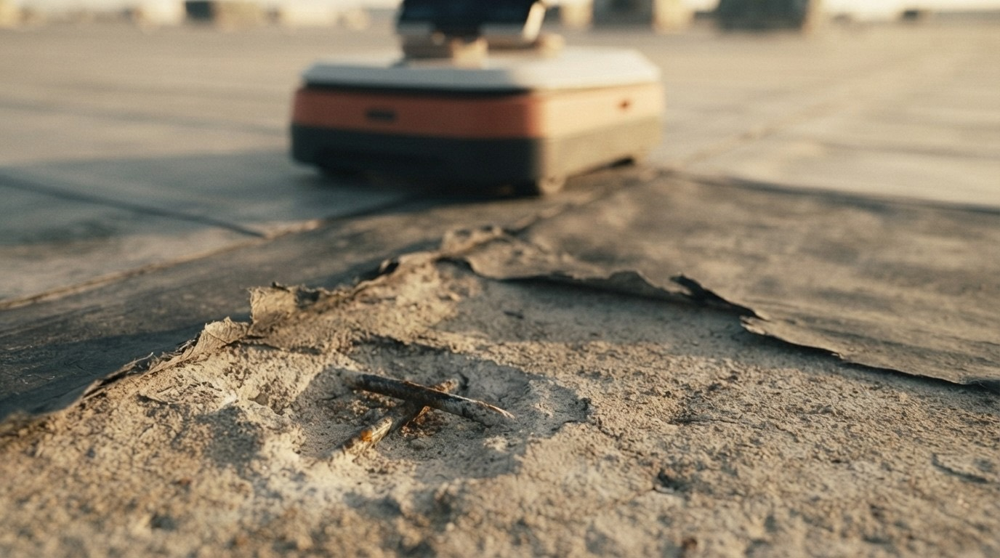
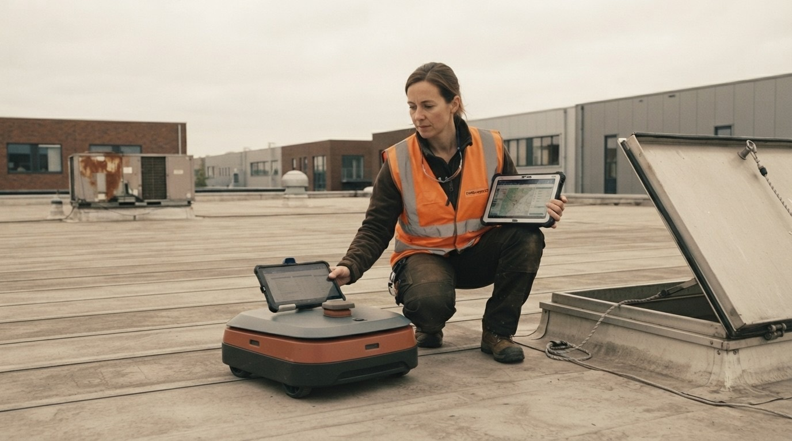
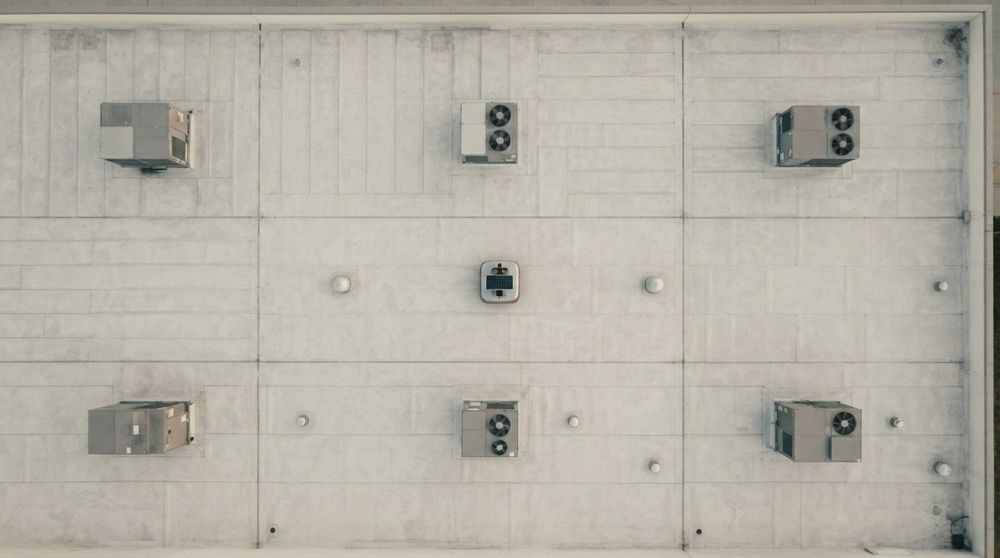
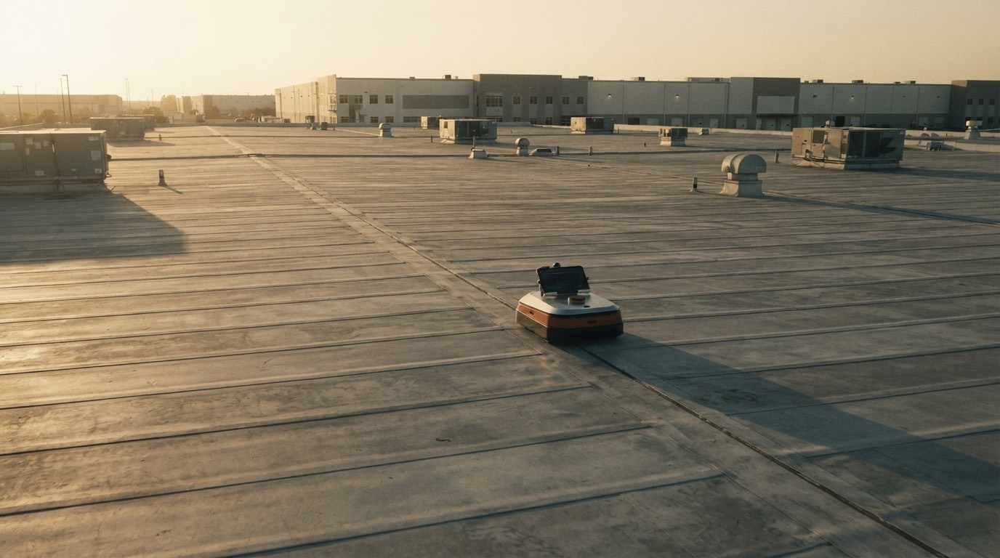
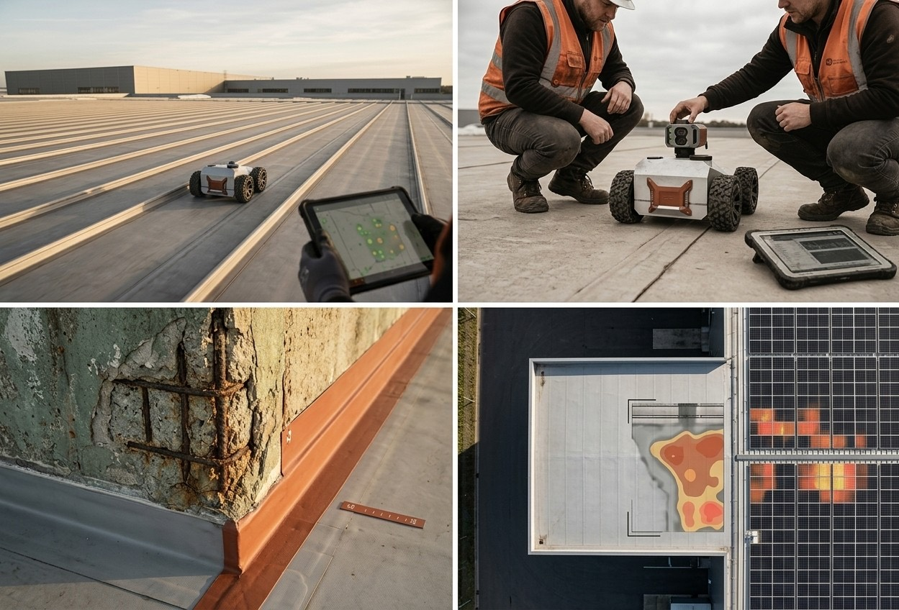

Robots and drones reach what people can't. AI reads the scans. You get the real condition of every asset you own. Measured, not guessed. Same method, every visit. So this year's number still means something next year.
Moisture under the roof. Voids beneath the floor. Corrosion inside the concrete. By the time you see it, the invoice has multiplied. Remote sensors miss it. People can't reach it. So the budget is a guess, and everyone hopes it's close.
We read wall-loss and rebar from inside the concrete. Years before it turns structural.
Water trapped under the membrane, pinned to the square metre. Not traced back from a stain on someone's ceiling.
Catch it early and it's a maintenance line. Catch it at failure and it's capex. Plus the downtime.

A clean roof tells you nothing. Underneath: a wet zone, a void, rust working through the deck. We find it, map it, and show you how fast it's moving.
Drones fly it. Crawlers roll it. The AI stitches every reading into one model you can trust. Then it re-scans next year to show exactly what moved. Same method, every time. That's the whole point.
One flight covers a whole roofscape or solar field. Thermal and ground-penetrating, edge to edge. No scaffolding. No shutting the site down.
They roll across decks and façades taking ultrasonic and electromagnetic readings. Reaching the spots a person on a rope can't. The same spots, every visit.
Every reading lands in one model. It draws the condition map, predicts how fast things decay, and turns that into a capex line. Per asset. Per portfolio.

A person sets the protocol and reads the result on the roof. The machine does the reaching and the measuring, the same way every time. No stunts. No hero shots. Just a survey your asset managers can put their name on.
Robots and drones scan the asset to a fixed protocol. The same points, every visit.
The AI fuses thermal, GPR, ultrasonic and visual data into one picture of what's really there.
Curves show when each element tips from sound to act. And what that tipping point costs you.
A living twin and a capex plan. Re-scan next year and watch the lines move.

Every asset becomes a condition map, a forecast, and a line in the capex plan. One screen. No more budgeting on a hunch.

A distribution centre lives and dies by its roof. One wet winter and you're mopping around the racking. We map the whole estate before a drip becomes a line stop.
A thermal pass finds the hotspots, dead strings and micro-cracks across the field. Tied to lost kilowatt-hours, not a hunch.
Buyers and lenders get measured condition, not a walk-round with a clipboard. So the price matches what's actually up there.
Roofs, decks, façades, solar fields. Scanned the same way, every visit. So the record still means something in five years.

Most of the built world runs on guesses about its own condition. We swap the guesses for measurement. Safer buildings. Smaller surprises. Budgets that hold. That's the work.
Tell us what you own. We'll show you what's really going on up there. Before the roof does.